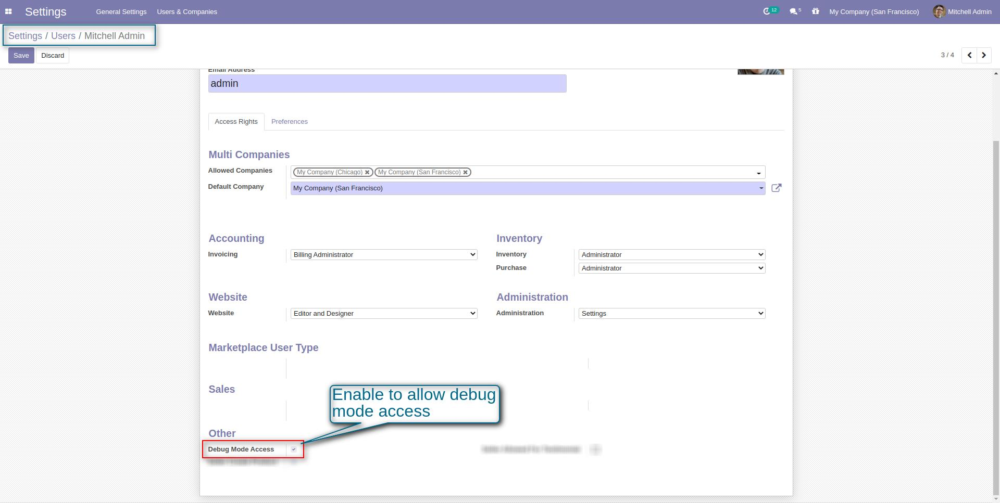

<section class="container">
    <div class="oe_styling_v8">
        <section class="oe_container">
            <div class="oe_row" style="width:100%;">
                <div class="col-sm-12" style="width:100%;">
                    <h2 class="oe_slogan text-primary text-center">Odoo Debug Mode Disable</h2>
                    <h3 class="oe_slogan text-primary text-center">Control Odoo backend & frontend debug modes</h3>
                </div>
                <div class="oe_span12" style="width:100%;">
                    <div class="card">
                        <div class="card-body">
                            <div class="alert alert-info">
                                <i class="fa fa-arrow-circle-o-right"></i>
                                <b>Few Words About Odoo Debug Mode Disable</b>
                            </div>
                            <p>
                                This module gives you option to control the Odoo debug mode. You can disable it for all
                                the users and allow it for the selected users. Only these selected users can use Odoo
                                debug mode.
                                It will be helpful in increasing security and privacy of your Odoo System.
                            </p>
                        </div>
                    </div>
                </div>
            </div>
        </section>
        <section class="oe_container">
            <div class="oe_row" style="width:100%;">
                <div class="oe_span12" style="width:100%">
                    <div class="card card-info" style="width:100%">
                        <div class="card-heading mt8 text-center" style="font-size: 22px;">
                            <i class="fa fa-pencil-square-o"></i><b> Work Flow: How Odoo Debug Mode Disable Works
                        </b>
                        </div>
                        <div class="card-body">
                            <div class="card-heading alert alert-success"><i class="fa fa-hand-o-right"></i><b>
                                Enable group to allow debug mode access</b>
                            </div>
                            <div class="oe_row_img oe_centered">
                                <center>
                                </center>
                            </div>
                        </div>
                    </div>
                </div>
            </div>
        </section>
        <div class='oe_span12' style="width:100%;">
            <h1 align="center">
                If You Need Any Help Please Contact
            </h1>
            <h3 align="center">
                Email Id: erpmstra@gmail.com
            </h3>
        </div>
    </div>
</section>
	